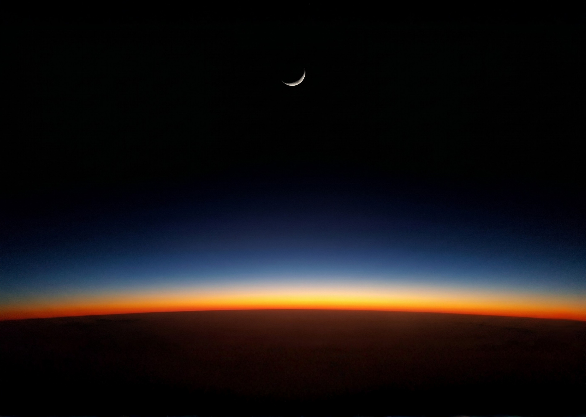

OmahTI Academy 2026
Ignite your passion, Explore new horizon

Anda kini bebas merancang konten pendaftaran, deskripsi rangkaian acara, dan form pengisian peserta di ruangan antar-bintang ini tanpa terganggu lag atau batasan layar yang diam!